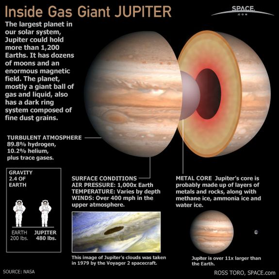

Jupiter is the fifth planet from the Sun and the largest in the Solar System. It is a giant planet with a mass one-thousandth that of the Sun, but two and a half times that of all the other planets in the Solar System combined. Jupiter is a gas giant, along with Saturn, with the other two giant planets, Uranus and Neptune, being ice giants. Jupiter was known to astronomers of ancient times. The Romans named it after their god Jupiter. When viewed from Earth, Jupiter can reach an apparent magnitude of negative 2.94, bright enough for its reflected light to cast shadows, and making it on average the third-brightest object in the night sky after the Moon and Venus.
Jupiter is primarily composed of hydrogen with a quarter of its mass being helium, though helium comprises only about a tenth of the number of molecules. It may also have a rocky core of heavier elements, but like the other giant planets, Jupiter lacks a well-defined solid surface. Because of its rapid rotation, the planet's shape is that of an oblate spheroid (it has a slight but noticeable bulge around the equator).
The outer atmosphere is visibly segregated into several bands at different latitudes, resulting in turbulence and storms along their interacting boundaries. A prominent result is the Great Red Spot, a giant storm that is known to have existed since at least the 17th century when it was first seen by telescope. Surrounding Jupiter is a faint planetary ring system and a powerful magnetosphere. Jupiter has at least 67 moons, including the four large Galilean moons discovered by Galileo Galilei in 1610. Ganymede, the largest of these, has a diameter greater than that of the planet Mercury.
Internal Structure

Jupiter is thought to consist of a dense core with a mixture of elements, a surrounding layer of liquid metallic hydrogen with some helium, and an outer layer predominantly of molecular hydrogen. Beyond this basic outline, there is still considerable uncertainty.
The core is often described as rocky, but its detailed composition is unknown, as are the properties of materials at the temperatures and pressures of those depths . In 1997, the existence of the core was suggested by gravitational measurements, indicating a mass of from 12 to 45 times that of Earth, or roughly 4% to 14% of the total mass of Jupiter. The presence of a core during at least part of Jupiter's history is suggested by models of planetary formation that require the formation of a rocky or icy core massive enough to collect its bulk of hydrogen and helium from the protosolar nebula. Assuming it did exist, it may have shrunk as convection currents of hot liquid metallic hydrogen mixed with the molten core and carried its contents to higher levels in the planetary interior. A core may now be entirely absent, as gravitational measurements are not yet precise enough to rule that possibility out entirely.